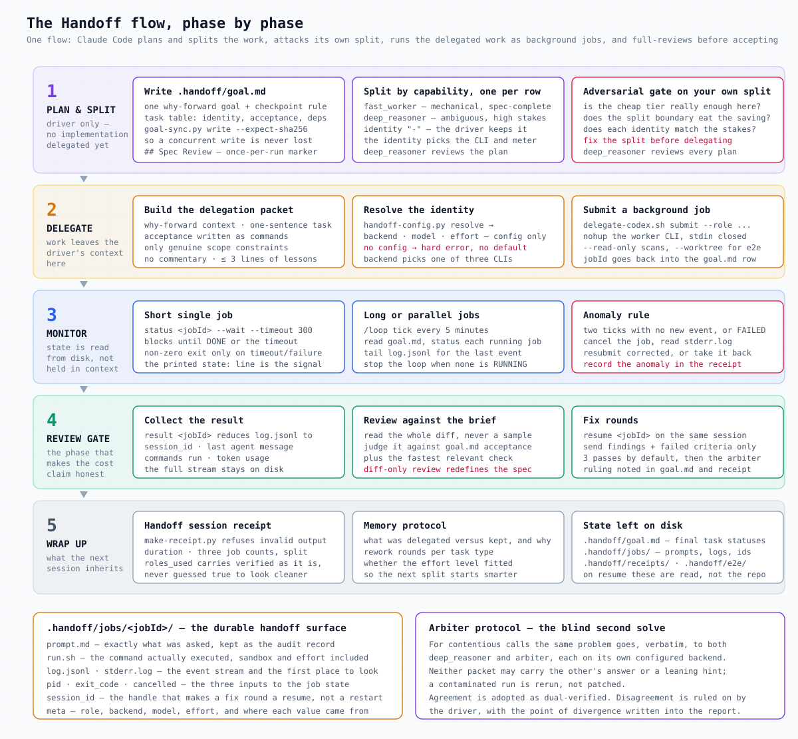
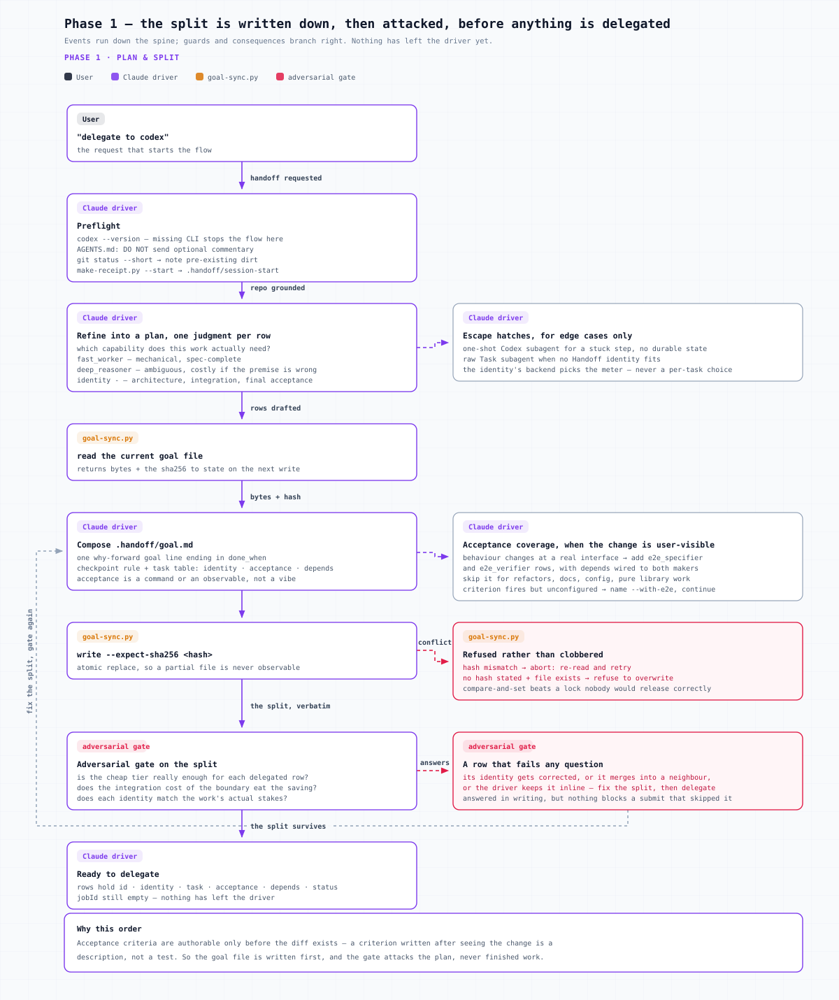
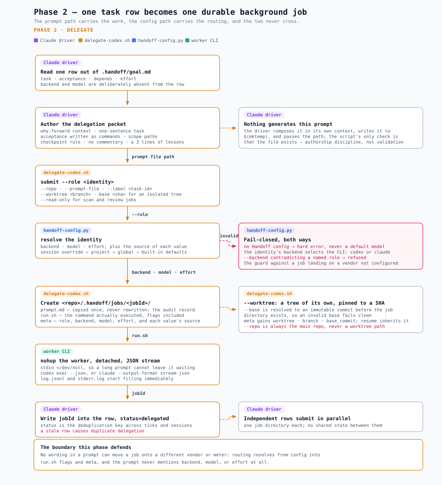
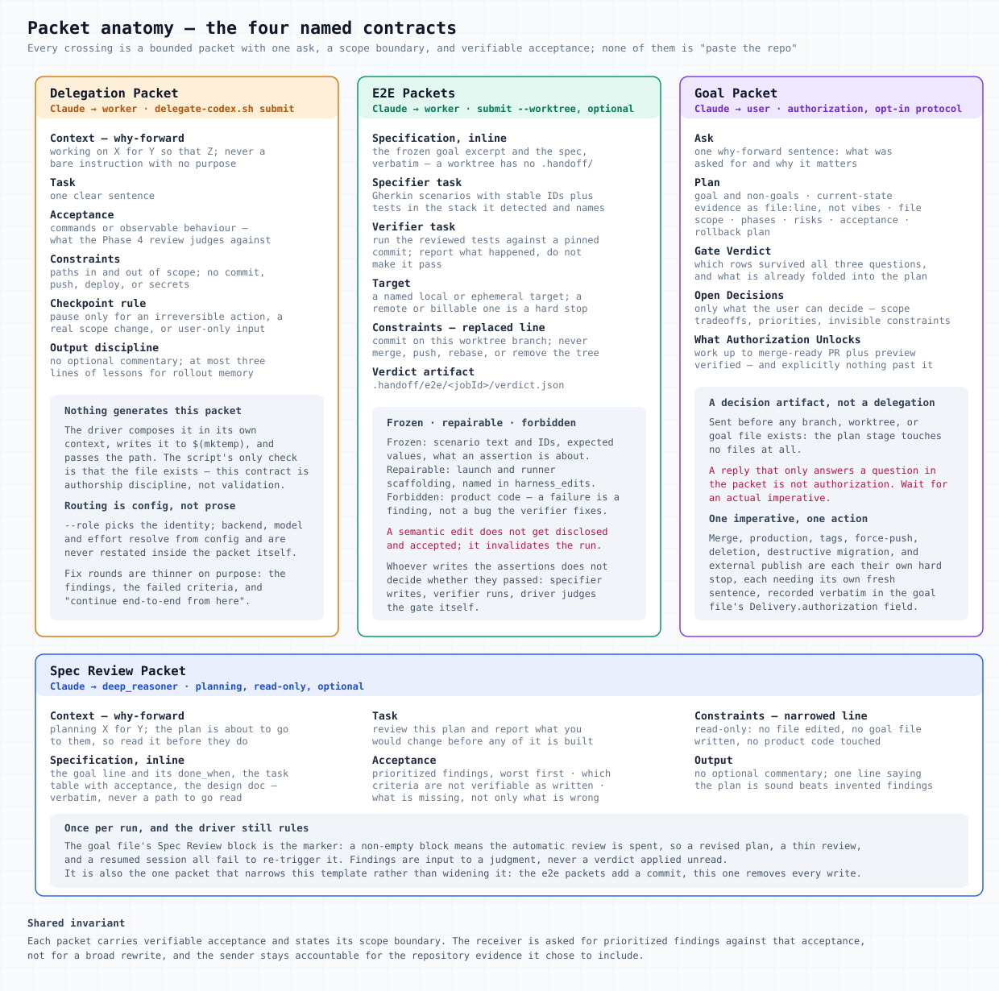
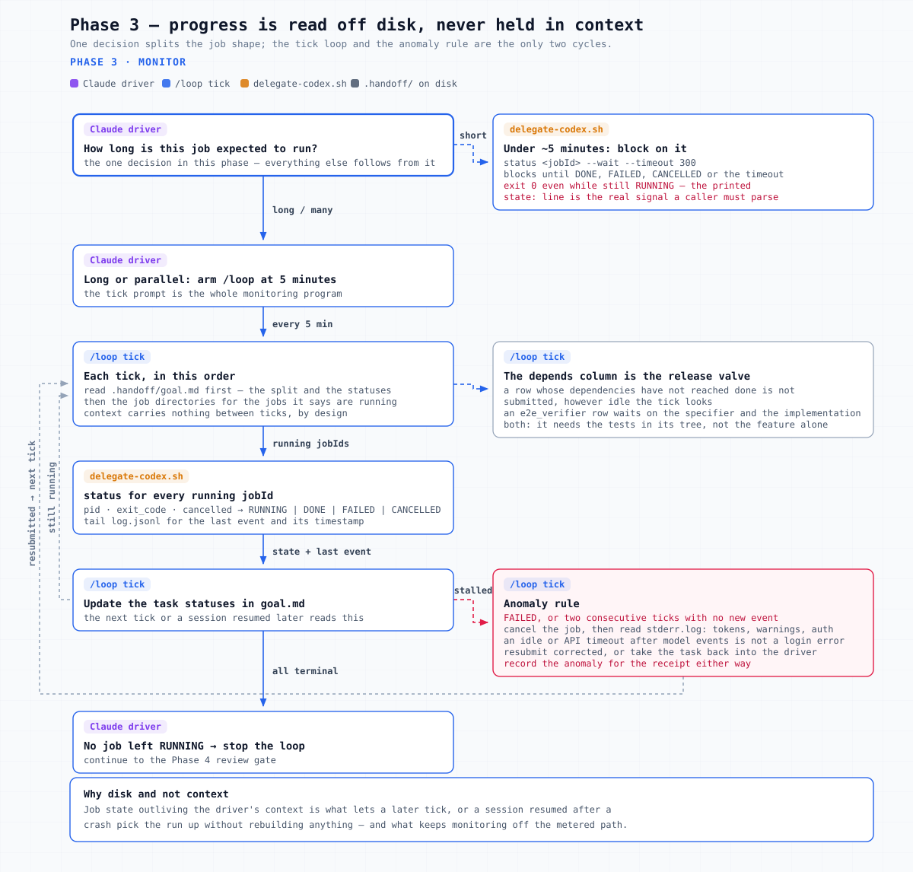
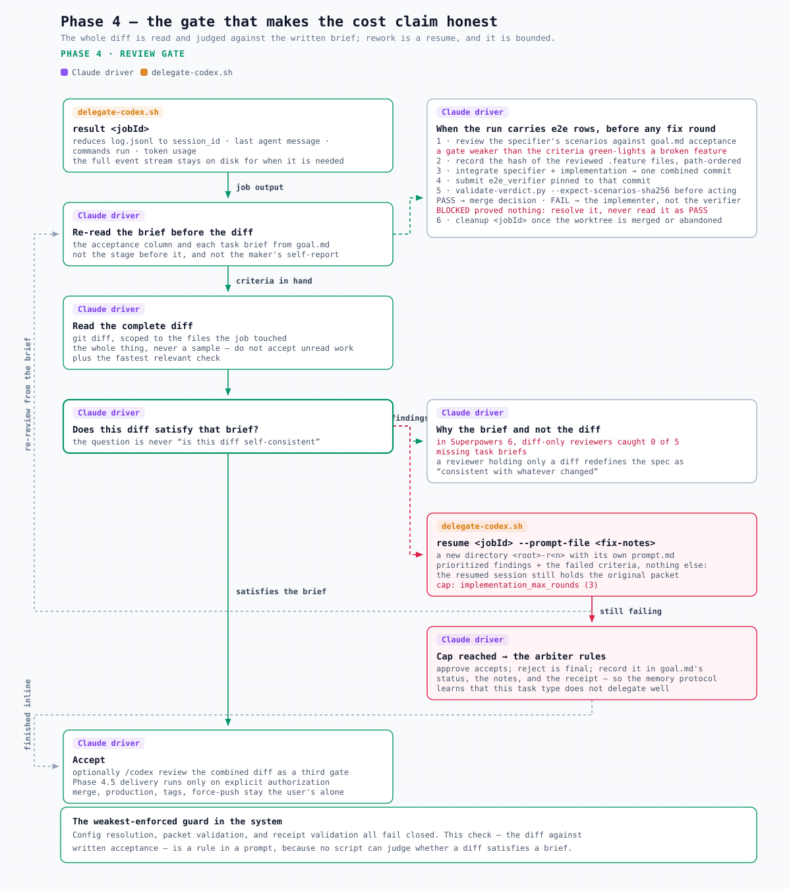
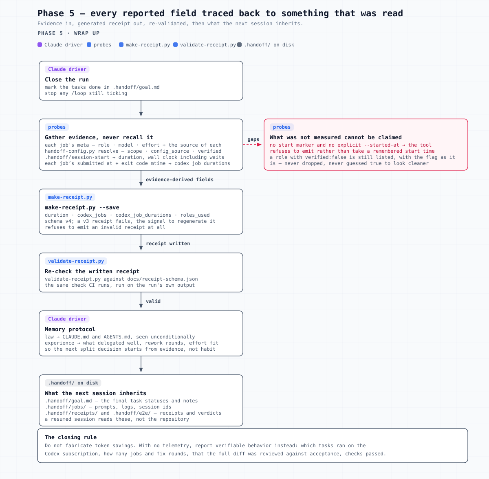

Agent Handoff: how the agent handoff works
Agent Handoff splits coding work between a driving Claude Code session and a delegated worker CLI, moving execution off the driver’s meter and off its context window without lowering the quality bar. Everything interesting in it is in the handoff: what crosses between the two agents, what is enforced at the boundary, and what evidence survives afterwards.
The shape of the thing
Agent Handoff is one flow with one driver. Claude Code plans, splits, gates and reviews; a worker CLI executes the delegable bulk of the implementation as background jobs. Which CLI is not a per-run decision: each task row names an identity, and that identity’s configured backend says whether the job runs on codex exec or on a second Claude Code. Codex is the common answer, not the definition — delegation still pays when the backend is claude, because the execution history stays in the job directory instead of the driver’s context. The skill went through a two-direction era where Codex could also be the orchestrator, and that half is gone: there is no direction field, no second host adapter, and no second monitoring surface. What is left is a single spine of five stages, and the interesting design lives in what crosses between them.

The driver plans, writes the split into .handoff/goal.md, and delegates. Each task row carries one judgment: which capability the work needs. That single choice determines everything downstream, because the identity's configured backend decides which CLI executes and which meter bills.
deep_reasoner
Ambiguous work where a wrong premise in step one is expensive to find late: architecture, root-cause diagnosis, config changes that fail silently. Also the reviewer of the plan itself, when that toggle is on.
fast_worker
Mechanical, specification-complete work whose acceptance criteria are enough to verify it. The bulk of what gets delegated.
arbiter
The blind second solver, invoked for contentious calls rather than assigned routine rows.
e2e_specifier opt-in
Turns a frozen specification into Gherkin scenarios with stable IDs plus repo-native executable tests. Depends only on the spec, so it runs beside the implementation.
e2e_verifier opt-in
Runs the reviewed tests against a pinned commit and writes a validated verdict. Depends on both the specifier and the implementation.
identity -
Kept inline by the driver: the split decision itself, cross-task integration, security-critical paths, final acceptance.
Three of the five are always configured; the two e2e identities are written only when setup runs --with-e2e, and a config carrying just the core three is complete rather than half-finished. All five are a backend + model + effort triple that can be mixed across vendors, and the values live only in .handoff/config.toml or ~/.config/handoff/config.toml — never in a prompt, never in a doc.
One identity carries a sixth field. deep_reasoner.auto_review_spec is a responsibility toggle rather than a routing value: it says whether that identity reads the plan once during Stage 1, and nothing else about it. The engine rejects it on any other identity instead of ignoring it. Absent means off, and flipping it leaves verified alone: no model, backend, or effort changed.
The job primitive
delegate-codex.sh wraps codex exec --json — or claude --print --output-format stream-json, per the identity’s backend — as a detached background job with durable state under <repo>/.handoff/jobs/<jobId>/. The name is historical; one script, one job shape, one code path. State lives on disk, so a /loop tick or a resumed session reconstructs progress without carrying it in context.
| File | What it carries |
|---|---|
prompt.md | The exact prompt sent, kept as the audit record of what was asked |
run.sh | The command actually executed, including sandbox and effort overrides |
log.jsonl | The event stream; result reduces it to session id, last agent message, commands, usage |
stderr.log | Tokens, warnings, auth errors; the first thing to read on a FAILED job |
pid / exit_code / cancelled | The three inputs to job_state: RUNNING, DONE, FAILED, CANCELLED |
session_id | Extracted from the stream; the handle that makes resume possible |
meta | Label, role, backend, model, effort, and the source of each of backend, model and effort (config vs explicit vs parent), plus submitted_at and, for a worktree job, worktree / branch / base_commit |
Three of its behaviours are worth calling out because they encode failures someone clearly hit:
- Fail-closed routing. With
--role, backend, model and effort resolve fromhandoff-config.py. No config is a hard error, never a silent default. The configured backend then selects the CLI, always; a per-job--backendthat contradicts a named role is refused, naming thehandoff-config.py setcommand that would actually change the routing. That is the guard against a job landing on a vendor the config never chose — and against the driver quietly re-deciding the meter mid-run. - Stdin is closed (
</dev/null). A long prompt can otherwise make the worker wait for more input, and a detached job's stdin never closes on its own, so the job would hang forever with no further events. - Non-git targets get
--skip-git-repo-check, detected viagit rev-parserather than a.gitdirectory test, so worktrees and submodules still count as repos. That flag is codex-only; a claude job never carries it. - A claude worker gets a clean credential environment. The generated
run.shunsets everyANTHROPIC_*andCLAUDE_CODE_*variable with Bash prefix expansion before exec, so the child authenticates like a fresh terminal rather than inheriting the host’s injected provider URL and key.
The five stages below each get one flow diagram: events down the spine, guards and consequences to the right, dashed edges for the paths that go backwards. The actor tag on each box is who acts; the label on each edge is what crosses.
Stage 1 — Plan and split

Preflight does four cheap things, and one of them is a clock. make-receipt.py --start stamps .handoff/session-start, which is what the Stage 5 receipt measures duration against; without the marker the tool later refuses to emit rather than accept a remembered start time. The other three are the Codex CLI version check (a missing CLI stops the flow instead of pretending the job primitives exist), a one-time offer to add the DO NOT send optional commentary line to the repo's AGENTS.md, and a git status --short so pre-existing dirt can be told apart from Codex's diff later.
The goal file is the one written reference
.handoff/goal.md is written before any job exists, which is what makes the acceptance criteria authorable at all — a criterion written after seeing the diff is a description, not a test. Its goal line is a single why-forward sentence ending in a done_when condition, and the template attaches an anti-Goodhart clause to that condition: a check that can be satisfied by deleting tests, skipping steps, or lowering the bar is not a valid check, and the fix is the check rather than the standard. Below it sit the checkpoint rule, an optional Delivery block used only under the full PR protocol, and the task table (id, identity, task, acceptance, depends, effort, status, jobId), plus sections for anomalies and notes.
Three constraints on that table matter more than they look. acceptance has to be a command or an observable behavior rather than a vibe, because Stage 4 reviews against it. depends is what the monitor loop reads before submitting a row, so a verifier cannot start before the tests it is meant to run exist. And the status enum is frozen, because /loop's stop rule and older goal files both depend on the existing values. The skill also refuses to demand the file for small work — a dedicated regression case exists to keep a one-line fix off the goal path, on the grounds that ceremony for a five-line change buys no safety.
Two writers touch that file: the driver and the Stage 3 monitor tick. goal-sync.py replaces locking with a hash check — a write must state the sha256 it last read, and a mismatch aborts with "re-read and retry" instead of clobbering the other update. A first write that states no hash refuses to overwrite an existing file at all, and every write goes through an atomic replace. Write frequency is low enough that compare-and-set beats a lock nobody would release correctly.
Attacking your own split
Before any job is submitted the split goes through an adversarial gate, which has to answer three questions in writing: does each delegated task genuinely not need the expensive tier, does the integration cost of the split boundary eat the savings, and does each row's identity match the stakes. A row that survives all three gets delegated; anything else has its identity corrected, gets merged into a neighbour, or stays inline with the driver. Earlier versions of the skill shipped this as a separate bundled companion skill; it now lives inline as part of Stage 1, with the same three questions and the same requirement that they be answered on the page rather than felt.
Acceptance coverage is decided here too. When the change alters user-observable behaviour at a real interface (a UI, an API surface, a mobile screen), the split gains an e2e_specifier row and an e2e_verifier row, with depends wired so the verifier waits on both the specifier and the implementation. Internal refactors, docs, config, and pure library work skip them. When the criterion fires but the identities are unconfigured, the rule is to say so exactly once, name /agent-handoff config --with-e2e, and continue without them: setup state does not get to quietly override the driver's judgment, and it does not block the run either.
A second reader for the plan itself
Everything above is the driver checking its own work. The adversarial gate attacks a split the driver just wrote, which means the agent that authored the plan is the only agent that judged it — the maker-is-also-judge failure the Darwin ratchet names, sitting on the one decision every later stage is judged against. The optional spec review is what closes it: before the plan reaches the user, deep_reasoner reads it once on its own configured backend and reports what it would change.
Three properties keep an optional extra job from turning into an argument that never ends. It fires once per run: the goal file's ## Spec Review block is the marker, and a non-empty block means the automatic review is spent, so a revised plan, a thin review, and a resumed session all fail to re-trigger it. It is read-only: --read-only on the job, findings as the whole output, no edit to the spec, the goal file, or product code. And the driver rules — findings are input to a judgment, not a verdict applied unread.
This one is deliberately not blind. The arbiter withholds every hint because two independent solutions to the same problem are what it is measuring. Here the plan under review is the driver's answer, so withholding it would leave nothing to read; the packet carries the goal line, the task table, and the design document verbatim. The cost is real and stated rather than hidden: an informed reader inherits the author's framing and will catch a wrong premise less often than an independent solve would. It is a second pair of eyes, not a second opinion. When deep_reasoner resolves to the driver's own vendor, the run says same-vendor the way the arbiter protocol does.
The toggle is off by default, which means the review answers to the driver's judgment and the user's request rather than to setup state, the same rule the e2e criterion follows from the other direction. Asking for it once does not write it into the config, and having it configured does not license a second pass.
Stage 2 — Delegate

This is the crossing where money is either saved or spent again — and where the driver’s own context is either protected or squandered. The receiving agent starts cold, and the flow refuses to solve that by letting it read the repository itself: the driver already holds the context, so it pays once to select the evidence, and the delegate spends its tokens on judgment instead of discovery. What comes back is a result, not the transcript that produced it; that stays in the job directory.

The first three rungs cost almost nothing and answer most questions. Why-forward context plus a one-sentence task plus acceptance-as-a-command tells the delegate what it is for and how it will be judged. The changed-file list plus git diff --stat gives the shape of a change without its content. Check output goes in as a summary or a tail, never as the whole log. The upper rungs are conditional: full diffs are for small files only, a large file contributes the excerpt that carries the decision, and beyond that the packet stops and hands control to the receiver — ask for the smallest file or snippet that unblocks the work. Context is pulled on demand rather than pushed in advance, which is what keeps a handoff from degenerating into a repository dump with extra steps.
The packet contracts

- The Delegation Packet (driver → delegated job) is prose, disciplined by convention: why-forward context, one-sentence task, acceptance as commands, constraints limited to genuine blockers, the checkpoint rule, and a fixed output rule — no optional commentary, at most three lines of lessons learned. The terse reviewer contract is presented as measured rather than folklore: 41% less reviewer output with no loss in judgment quality.
- The E2E packets are the same shape with the "do not commit" constraint replaced by a commit-on-this-worktree-branch rule — they are the only packets that do. They also carry the specification inline, because a worktree has no
.handoff/to read it from, and they name an approved local or ephemeral test target rather than letting the verifier guess one. - The Spec Review Packet (driver →
deep_reasoner, Stage 1) is the one packet that narrows the template rather than widening it: read-only, findings only, no edit to any file. It carries the plan verbatim because the reviewer starts cold and must judge what it was given rather than go looking for the plan itself, and it asks for what is missing as well as what is wrong — plus a one-line "this is sound" when it is, rather than invented findings. - The Goal Packet (driver → user) is not a delegation at all but a decision artifact: the ask, the plan with
file:lineevidence, the gate's verdict, the open decisions only the user can settle, and an explicit statement of what confirming it does and does not authorize. It is sent before any branch, worktree, or goal file exists.
Where a delegation prompt is actually written
Nothing generates the delegation prompt. The driver composes it in its own context from the delegation packet shape, writes it to a mktemp file, and passes that path to delegate-codex.sh submit --prompt-file; the script's only check is that the file exists. scripts/delegate-codex.sh:221 So the packet contract on this crossing is authorship discipline, not validation — unlike the config resolution happening a few lines later in the same command.
From there the prompt becomes state. submit copies the temp file into the new job directory as prompt.md, and the generated run.sh reads it back with cat and passes it to the worker as an argument, with stdin closed so a long prompt cannot leave the detached job waiting for more input. scripts/delegate-codex.sh:276 The copy is never rewritten afterwards, which is what makes it usable as the audit record of what was asked rather than of what the driver remembers asking.
A fix round takes the same path at a smaller size. resume creates its own directory, <parent>-r2, and its prompt.md holds only the prioritized findings and the failed criteria, because the resumed worker session already carries the original packet. It reads the parent's backend and role out of meta, so a fix round lands on the same CLI with its provenance intact rather than as an anonymous entry. What stays out of every one of these files is the routing: backend, model, and effort come from handoff-config.py through --role and land in meta and in the run.sh flags, so no wording in a prompt can move a job onto a different vendor.
Worktree jobs
submit --worktree <branch> --base <commit-ish> runs a job in its own Git worktree under .handoff/worktrees/<jobId>, on either backend — the protocol is pure Git, so there is one implementation rather than one per vendor. Four rules make it usable, and each of them is a bug someone would otherwise hit. --repo is always the main repo, because a worktree passed there would fall through to the global config and run the wrong model. The base is resolved to an immutable SHA before the job directory exists, because a branch can advance between cutting the tree and reading the verdict, and then the verdict names a commit nobody tested. The worker commits on its own branch and does nothing else — no merge, no push, no rebase, no removing the tree. And the driver reviews, integrates, and calls cleanup, which is idempotent and refuses a worktree holding uncommitted changes rather than discarding work.
The self-containment consequence is the one worth remembering: a worktree receives tracked content only, and .handoff/ is gitignored. So no e2e job reads the goal file, and no e2e job writes it either — workers return artifact paths, and the driver writes them through goal-sync.py. An uncommitted user-supplied spec is either inlined into the packet or committed before the tree is cut; the driver picks, and it cannot be left implicit.
What crosses at each boundary
| Boundary | What is sent | What is deliberately not sent |
|---|---|---|
| Driver → delegated job | Why-forward context, one-sentence task, acceptance as commands, scope paths, checkpoint rule | The backend, model, and effort — those resolve from config, not from prose, and the packet is identical whichever CLI receives it |
| Driver → e2e worktree job | The frozen goal excerpt and the spec verbatim, the approved test target, the commit-on-this-branch rule | .handoff/ in any form; a worktree carries tracked content only |
| Driver → deep_reasoner, spec review | The plan verbatim — goal line, task table, acceptance criteria, the design document — and the ask for prioritized findings | Any authority to edit: not the plan, not the goal file, not the repo |
| Delegated job → driver | result reduces either backend's stream to the same four fields: session id, last agent message, commands, usage |
The full log.jsonl, which stays on disk for when it is actually needed |
| Review → fix round | Prioritized findings, the acceptance criteria that failed, "continue end-to-end from here" | The original packet; the session already holds it |
| Verifier → driver | verdict.json: result, tested commit, scenario counts and ids, harness edits, findings, evidence |
A prose claim of PASS; the verdict is validated against its own cross-field rules first |
| Driver → user, Goal Packet | The ask, the plan with file:line evidence, the gate verdict, open decisions, what authorization unlocks |
Any assumption that a reply answering a question is an authorization to proceed |
| Lost session → replacement | .handoff/goal.md plus the job directories |
The repository, and the expectation of rebuilding context from zero |
The exclusions are as specific as the inclusions. Every packet's constraints section forbids committing, pushing, deploying, publishing, and touching secrets or .env values, and the e2e packets narrow that further rather than widening it — the only permission they add is a commit on their own throwaway branch.
Stage 3 — Monitor

One decision shapes the whole phase: how long the job is expected to take. A short single job gets blocked on — status <jobId> --wait --timeout 300. Long or parallel work gets a /loop tick at five minutes, and the tick prompt is the entire monitoring program: read .handoff/goal.md first, then the job directories for the jobs it says are running, poll each one's status, tail its log.jsonl for the last event, write the statuses back, and stop when nothing is left RUNNING.
Reading the goal file first is not an ordering detail. It is what lets a tick reconstruct its picture from disk rather than from context, which is what makes the loop survive a crash, a resumed session, and its own lack of memory between ticks. Statuses are the deduplication key, so a stale row causes duplicate delegation — which is why the template calls out keeping them current, and why depends is read on the same pass: a row whose dependencies have not reached done is not submitted, however idle the tick looks.
Monitoring is deliberately evidence-only. The signals are the job's own status, the tail of log.jsonl, stderr.log, and repo evidence — never chat text, and never a claim about progress that nothing on disk supports. A job with no new JSONL events across two consecutive ticks, or a FAILED status, is an anomaly with a fixed handling: cancel it, read the stderr, then either resubmit with a corrected prompt or take the task back into the driver, and record the anomaly for the receipt either way. Authentication is kept as its own class inside that rule: an idle or API timeout after successful model events must not be relabeled as a login error.
Stage 4 — Review gate

This is where both claims are earned. Moving execution off the driver’s meter only holds up if the delegated work is checked properly — and keeping it off the driver’s context window only holds up if what comes back is enough to judge. So Stage 4 reads the complete diff rather than a sample, and reads it against the written criteria rather than against itself. Findings go back to the same worker session through resume, which reads the parent job’s backend from its meta so the round lands on the same CLI, carrying the prioritized findings and the failed criteria and nothing else, since the session still holds the original packet.
The review is against the acceptance column in .handoff/goal.md and each task's brief, never against the diff alone. The skill cites its reason: in the Superpowers 6 runs, diff-only reviewers caught none of five missing task briefs, because a reviewer holding only a diff redefines the spec as "consistent with what changed". So the question the gate asks is "does this diff satisfy that brief", not "is this diff self-consistent".
When the run carries e2e rows
The acceptance rows are sequenced before the fix-round step, and the ordering is load-bearing in a specific way: the driver reviews the tests first. A generated gate weaker than the goal's criteria will green-light a broken feature, and the verifier's verdict inherits that weakness silently. So the driver reads the specifier's scenarios against the acceptance column, records the sha256 of the reviewed .feature files at that moment, integrates the specifier and implementation branches into one combined commit, submits the verifier pinned to that commit, and validates the verdict before acting on it.
| Verdict | What it requires | What the driver does with it |
|---|---|---|
PASS |
exit_code == 0, every executed scenario passed, at least one scenario, total == len(ids), empty findings, and scenarios_sha256 equal to the hash recorded at review time |
Goes to the merge decision, which still needs the driver's own final review |
FAIL |
At least one finding, plus either a non-zero exit code or passed < total |
Routed to the original implementer as a product finding — never to the verifier, which does not fix product code |
BLOCKED |
passed == 0 and a finding naming the blocker; command and exit_code may be null |
Nothing was proved: resolve the prerequisite and rerun. It is never read as a PASS |
The split the verifier must respect is three-way. Scenario text and IDs, expected values, and the identity of what an assertion is about are frozen. Launch and runner scaffolding — start commands, base URL, waits, fixtures — is repairable, and every repaired file has to be named in harness_edits. Product code is forbidden. A semantic edit does not get disclosed and accepted; it invalidates the run, and the driver restarts from a clean state with a new recorded hash. One limit is stated rather than papered over: the hash lock covers the .feature files only, because executable spec files legitimately hold repairable scaffolding. The worktree path itself is no longer a limit — one script-owned code path serves both backends, and the lifecycle test runs its full set of assertions against each.
How disagreements are settled
Three instruments exist for disagreement and they are not variations on each other. The Stage 1 gate attacks a plan that already exists and returns a corrected split; its output is a revision of the plan, and the attacker is the driver itself. The optional spec review hands that same plan to another agent for one informed read; its output is findings the driver rules on. The arbiter protocol solves the problem again from scratch: the same problem text goes to deep_reasoner and arbiter as real jobs on their own configured backends, and neither packet may contain the other's answer or a leaning hint. Only the third one is blind, and the difference is not cosmetic: a hint that would merely bias a reviewer invalidates an arbitration. "X thinks A, verify it" already counts as contaminated, and a contaminated run is rerun rather than patched, because a hint manufactures the agreement the protocol exists to test.
What happens after that is a fixed escalation, and every step names a decider:
- Two solvers agree. The answer is adopted and marked dual-verified. When config puts both on the same vendor, the protocol still runs but the receipt records
same-vendor, so the weaker independence stays visible rather than being quietly claimed as two opinions. - Two solvers disagree. The driver rules, and records both the point of divergence and the reasoning. Both solvers still appear in
roles_used; losing an argument does not erase the entry. - Implementation misses acceptance. The driver's review is the ruling, and its output is one bounded fix round into the same session.
- Two rounds fail. Arbitration ends rather than continuing. The driver takes the task back, and the takeback is written into the goal file's status, the notes, and the receipt, which is what lets the memory protocol learn that this task type does not delegate well.
- Anything sits behind a hard stop. Merge, production, tags, force-push, deletion, destructive migration, and external publish are the user's alone. One imperative sentence authorizes one action, a question about whether to proceed is not authorization, and an earlier approval for something else never carries over.
Read together, the escalation is a ladder of decreasing automation: machine checks, then a second model, then the driver, then the human. Nothing in it resolves a disagreement by averaging two answers or by taking the more recent one.
The optional delivery stage
Stage 4.5 exists only when the user asked for the full Plan→Goal→PR→Verification protocol, and the trigger grading is explicit that a one-line fix must not be escalated into it — a regression case exists to keep ordinary changes off that path. When it does run, it takes the work up to "merge-ready PR plus preview verified" and stops there, filling in the goal file's Delivery block (branch, PR, CI, preview, live) as each becomes known and recording each authorization actually given with the user's verbatim intent. Its verify ladder escalates from the single targeted test through lint, module suite, full build, and then the rung that matters most: re-reading the acceptance criteria against the actual diff rather than the maker's self-report. It only ever runs commands the repo itself documents; a rung the repo has no command for is marked n/a out loud rather than skipped silently.
Stage 5 — Wrap up

Every non-trivial run ends with a fixed-schema receipt: phase, claude_session, duration, codex_jobs, codex_job_durations, cc_jobs, cc_job_durations, checks, anomalies, scope, config_source, roles_used, and receipt_schema_version: 5. It is generated by make-receipt.py, which refuses to emit an invalid one, and can be re-checked later by validate-receipt.py against docs/receipt-schema.json — the same check CI runs, run on the run's own output.
The measured fields are the interesting part, because they are all derived rather than recalled. duration is wall clock from the .handoff/session-start marker, so a run that sat waiting on a permission prompt carries that wait in the number; with no marker and no explicit --started-at, the tool refuses to emit at all. The per-job durations are measured the same way, from each meta's submitted_at to the mtime of its exit_code, with jobs from an earlier run excluded and a job still going reading running. The two job counts are a count of job directories including fix rounds, not a recollection. Each role's verified flag comes from the config file, and a role that is unverified still gets an entry with verified: false — it is never dropped to make the receipt look cleaner. In roles_used, an entry's host is the CLI that executed that role, unrelated to the runtime that loaded the skill.
What v5 adds is a partition, not a new measurement. codex_jobs/codex_job_durations narrow to the codex-backed jobs and cc_jobs/cc_job_durations carry the claude-backed ones, split by each job meta's own backend= line rather than by what the driver remembers submitting. A job directory with no such line predates backend dispatch and counts as codex. The point is that a run reporting four jobs on the Codex subscription has to have four jobs whose metadata says so — the receipt can no longer describe work as landing on a meter it never touched. phase gains delegated implementation for the same reason: codex implementation is a false name for a run whose work ran on Claude.
What the schema dropped says as much as what it keeps. direction and monitoring_level were v2 fields describing a second flow and a fragile capability probe; both are gone with the machinery they described, and a receipt still carrying them fails validation, which is the intended signal to regenerate it. A v4 receipt, missing the two cc_ fields, now fails for the same reason and with the same remedy.
The closing instruction in SKILL.md is the one that holds the rest together: do not fabricate token savings. When telemetry is unavailable, report verifiable behavior instead — which tasks ran on which backend, how many jobs and fix rounds, that the full diff was reviewed against the acceptance criteria, and that the checks passed.
Then the run gets turned into input for the next one. The memory protocol draws its line explicitly: facts every future session must see unconditionally belong in CLAUDE.md and AGENTS.md, while the memory layers carry experience — which task types each identity handled well, which effort levels fitted, where rework happened. Instruction files are law; memory is what the next split decision learns from. What stays on disk is the cold-start payload: .handoff/goal.md with its final statuses and notes, .handoff/jobs/ with the prompts, logs and session ids, and .handoff/receipts/ and .handoff/e2e/ with the run's evidence. A resumed session reads those, not the repository.
Drift control across the loop
The five stages run one control structure: the goal is written down before any work leaves the driver, each gate judges the work against that written goal instead of against the stage before it, and the rework path has a fixed end.

| Where drift gets in | What holds it | Enforced by |
|---|---|---|
| The goal is written so it can be met without being achieved | The anti-Goodhart clause on done_when; done_when and hard_stops compose by AND, so meeting every condition never authorizes crossing a stop |
Convention |
| The plan is judged only by the agent that wrote it | The optional spec review: one independent read by deep_reasoner before the plan reaches the user, recorded in the goal file's ## Spec Review block |
Convention, once per run |
| The split is drawn for cost rather than for stakes | The adversarial gate's three questions, answered in writing, and the corrected task→identity map it produces | Convention |
| Work lands on the wrong agent or the wrong meter | Routing comes from handoff-config.py, and the identity's configured backend selects the CLI; a per-job --backend contradicting a named role is refused, and swapping to another identity to change vendor is forbidden in the flow prose |
Fails closed on the override; convention on the swap |
| The delegate invents its own stopping points | The checkpoint rule, pause only for a destructive action, a real scope change, or something only the user can give, repeated in the goal file and in every packet | Convention |
| A dependent row runs before what it depends on | The depends column, read by the monitor tick before any submit; an e2e_verifier row names both the specifier and the implementation |
Convention, read every tick |
| A job is judged against a commit nobody tested | --base resolved to an immutable SHA before the job directory exists, echoed back as tested_commit in the verdict |
Fails closed |
| The reviewer grades the diff instead of the goal | Stage 4 reads acceptance from goal.md; the verify ladder's fifth rung compares the diff against the criteria rather than the maker's self-report |
Convention |
| The acceptance gate itself is weaker than the criteria | The driver reviews the scenarios before the verdict counts, and locks them with scenarios_sha256; PASS is checked against exit code, scenario counts, and an empty findings list |
Fails closed at validate-verdict.py |
| A failing task loops forever | Two fix rounds maximum, each carrying only prioritized findings and the failed criteria; then the driver takes the task back | Convention |
| The run reports better than it went | Fixed receipt schema, measured duration and per-job durations, unverified roles listed with verified: false, and the standing rule against fabricated token savings |
Fails closed at receipt validation |
| A change to the workflow itself makes it worse | The Darwin ratchet: one dimension per round, a real miniloop or two test prompts before keeping anything, a reviewable revert, and no agent as sole maker and sole judge | Convention |
The pattern in the third column is worth sitting with. Machine enforcement clusters where a wrong value is cheap to detect: resolving config, pinning a base commit, validating a verdict, validating a receipt. The check that actually keeps the work on the goal — reading the diff against written acceptance criteria — is a rule in a prompt. That is not obviously wrong, since no script can judge whether a diff satisfies a brief, but it does mean the strongest guarantees in the system sit around the weakest-enforced one.
Observations
Things I noticed while reading that a maintainer might want to look at:
resumeused to lose identity metadata — fixed in v3.5.0. A resumed job'smetarecordedlabel=resume,model=inherit, and noroleorbackend, so a run whose work happened mostly in fix rounds had thinnerroles_usedprovenance than a clean first pass.resumenow carries the parent'sroleandbackendforward, which it has to anyway: the backend is what tells it which CLI to resume on.- An empty session id is cached.
extract_session_idpipes throughtee, so a scan that finds nothing writes a newline intosession_id. The[ -s ... ]guard then treats that file as populated and later calls return the empty value without rescanning a log that has since grown. scripts/delegate-codex.sh:171, :175 statusexits 0 while a job is still RUNNING. Only the--waittimeout path returns non-zero, so a caller branching on exit status alone cannot distinguish "finished cleanly" from "still going". The printedstate:line is the real signal, and callers have to parse it. scripts/delegate-codex.sh:445- The adversarial gate is advisory in the way that matters. Nothing mechanically blocks a submit that skipped it, unlike the config resolution, the base-commit pin, the verdict validation, and the receipt validation, which all fail closed. Given that the gate is what defends the cost claim, it is the least enforced of the guards.